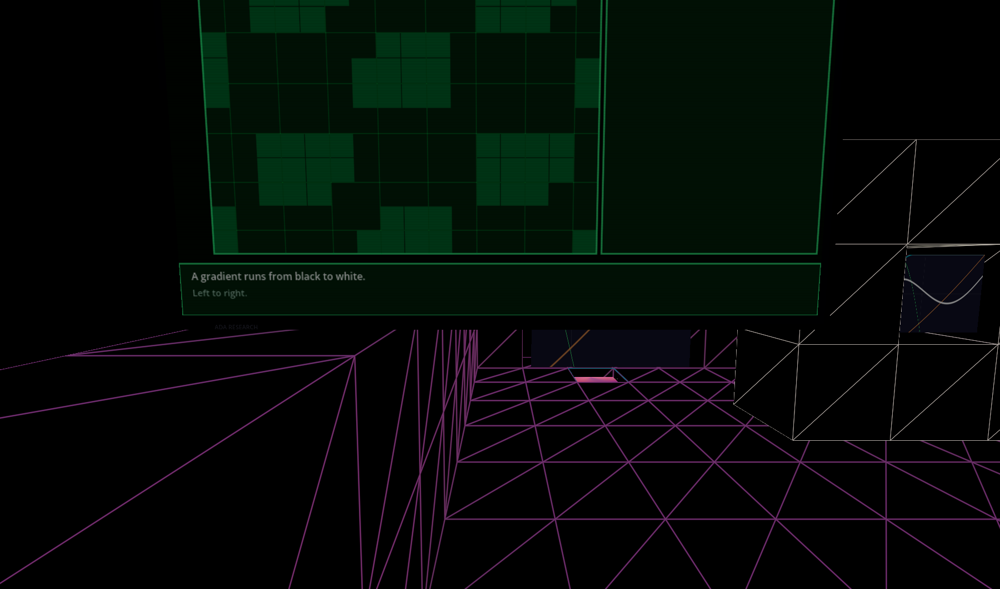
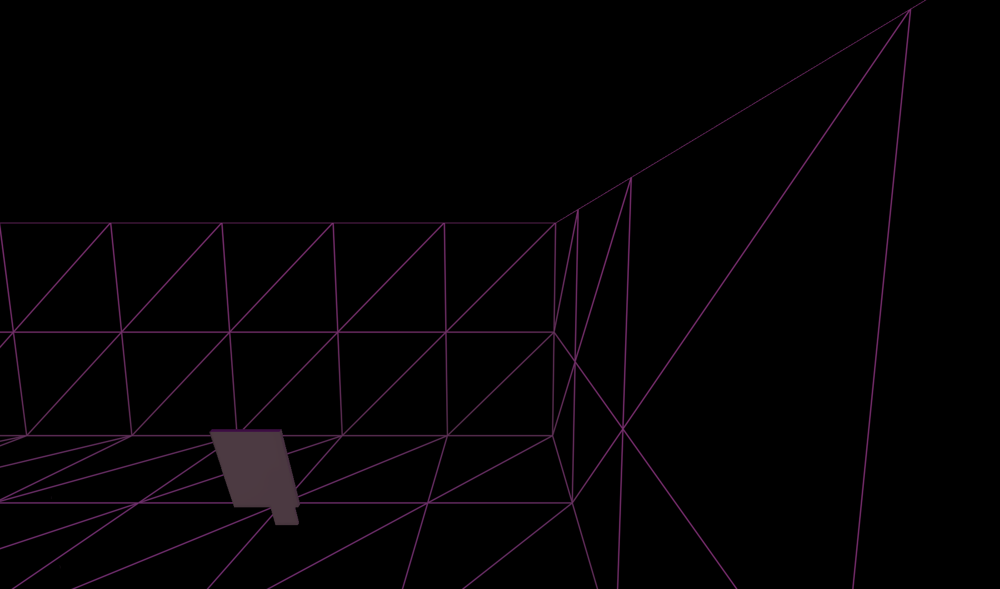
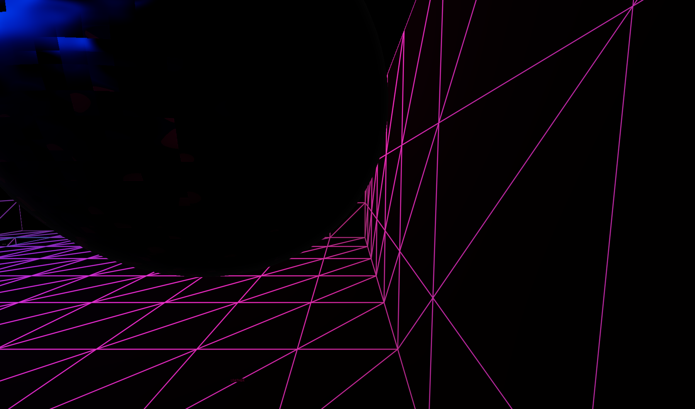
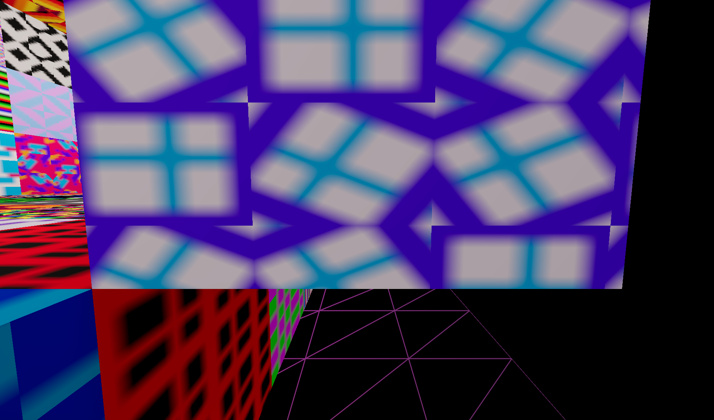

April 2, 2026
Ada Research has 1,687 artifacts across 47 registries. Until today, displaying a collection meant hand-placing each artifact in map_data.json, one cell at a time. A museum with 40 shaders meant 40 lines of JSON. The library rack changes that to one line:
library_rack:0:1.5#collection:shaders
Every library rack follows the same visual pattern. Empty slots are 1x1 cubes with the grid shader — black faces, off-white wireframe edges. Filled slots have 0.8-scale cubes inside with the artifact's actual material. No gap between cubes. No backplate. Open from both sides.
o = grid cube (shelf structure). x = artifact cube (content). The border of grid cubes frames the artifacts. Each map's rack_layout.json defines exactly which slots are filled and which are empty.
Each of the 12 shader lesson maps gets a unique shelf showing the shaders taught in that lesson. The cubes display the actual .gdshader materials — not placeholders. Shader_01 shows step, smoothstep, sin, pow, combined. Shader_05 shows tile, truchet, brick, voronoi, wang, offset, noise.

Shader_01: 5 shaping functions

Shader_05: 7 pattern types

Shader_11: 5 queer materials
| Map | Shaders | Shelf size |
|---|---|---|
| Shader_01_Shaping | step, smoothstep, sin, pow, combined | 11x3 |
| Shader_02_Colors | gradient, hsb, mix, rainbow | 9x3 |
| Shader_05_Patterns | tile, truchet, offset, brick, wang, voronoi, noise | 15x3 |
| Shader_07_Noise | value, gradient, simplex, warped | 9x3 |
| Shader_10_ReactionDiffusion | dla_visual, reaction_diffusion | 5x3 |
| Shader_11_QueerRubber | leather, oil_slick, pop_plastic, fur, sad_metal | 11x3 |
| Shader_12_PinkExtravaganza | candy, pearl, oil_slick, water, drag | 11x3 |
The same rack works for any registry. One config key, different collections:
Primitives: platonic solids
Hazards: 66 creatures and traps

Shader_Arch_Gallery: all 12 lesson shaders in a 13x5 rack
At /library in the encyclopedia: a split-view drag-and-drop editor. Left side is the shelf grid — drag artifacts in, drag to dumpster to remove. Right side is the catalog organized by category. Click Save to write rack_layout.json to the map directory. The VR rack reads the same file at runtime.
library_rack.gdOn apply_grid_config(), reads the collection name, loads rack_layout.json from the map directory, builds a wall of cubes. Empty slots get 1x1 grid-shader cubes (SimpleGrid.gdshader, black model, off-white wireframe). Filled slots get 0.8 cubes with the artifact's shader material extracted from the scene or loaded directly from .gdshader paths.
{
"collection": "shaders",
"cols": 11, "rows": 3,
"slots": [
[null, null, null, null, null, null, null, null, null, null, null],
[null, "res://...shaping_step.gdshader", null, "res://...shaping_smoothstep.gdshader", null, ...],
[null, null, null, null, null, null, null, null, null, null, null]
]
}
null = grid cube. String starting with res:// = shader path loaded directly onto a cube. String without res:// = artifact lookup name resolved from the registry.
/librarySplit view: shelf grid (left) + artifact catalog (right). Drag from catalog to shelf. Drag to dumpster to remove. Number inputs for cols/rows. Preset buttons load saved layouts from the API. Save writes to disk. Load reads from disk.
| Component | Change |
|---|---|
| library_rack.gd | Created — generalized from shader_bibliotek. Reads registry or rack_layout.json. Grid cubes with SimpleGrid shader. 0.8 artifact cubes with extracted materials. |
| rack_layout.json | Created for 12 shader maps + Shader_Arch_Gallery + 12 collection maps. Each curated per map. |
| /library web page | Split-view drag-and-drop editor. Save/Load via API. Preset buttons for all deployed racks. |
| /api/library | GET reads rack_layout.json from map dir. POST writes it. |
| Map compaction | 30 expanded map_data.json files compacted (arrays on single lines). |
Session: Library rack system — one artifact for every collection, web editor for curation, shader cubes with actual materials.